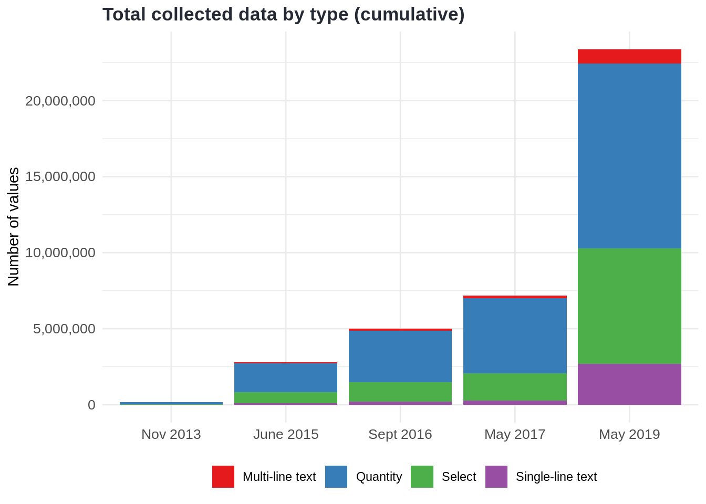
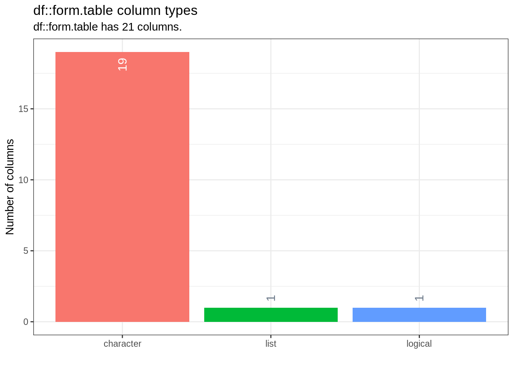
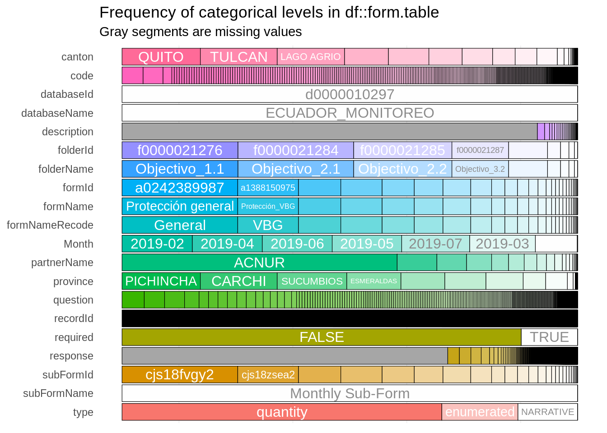

About data
Data in ActivityInfo over time
| Indicator count totals | |||||
|---|---|---|---|---|---|
| Nov 2013 to May 2019 | |||||
| Date | Quantity | Select | Single-line text | Multi-line text | % of total data collected |
| Nov 2013 | 141,442 | 30,531 | 0 | 6,309 | 3.54% |
| June 2015 | 1,887,857 | 745,841 | 85,863 | 57,128 | 2.06% |
| Sept 2016 | 3,380,991 | 1,296,548 | 191,640 | 116,184 | 2.33% |
| May 2017 | 4,932,977 | 1,809,419 | 265,196 | 168,599 | 2.35% |
| May 2019 | 12,174,327 | 7,595,829 | 2,683,945 | 915,948 | 3.92% |

From the perspective of ActivityInfo, it shows a clear need for new tools to support analysis of qualitative data as the absolute volume of qualitative data has increased by a factor of 150, and almost doubled as a relative share of all data collected.
Data preparation
This section gives some ideas how the raw data of Ecuador monitoring looks like.
The data has been extracted from ActivityInfo by using the ActivityInfo API and pre-processed to make it ready for the analysis.
The most of data extraction and cleaning are done beforehand (please see
R/folder in the repository especially take a close look atetl.Randetl-methods.Rfiles). If you want to download the raw data, you must have an access for it, that can be done by sourcing theetl.Rfile.Data dictionary shows what the columns mean in the data:
databaseId: the internal ActivityInfo id for databasesdatabaseName: the name of databases visible to usersfolderId: the internal ActivityInfo id for foldersfolderName: the name of folders visible to usersformId: the internal ActivityInfo id for formsformName: the name of forms visible to userssubFormId: the internal ActivityInfo id for the sub-forms where the records are keptsubFormName: the name of the sub-forms visible to usersMonth: indicating month when a record is enteredcode: Schema question codequestion: Question label indicated by the coderesponse: Response given by usersrequired: A boolean value to check whether the question is required to complete.type: internal type for the code. The available types in the data are quantity, NARRATIVE, enumerated.partnerName: The name of reporting partners. The name of implementing partners can be extracted from the data.canton: The canton name of the record.province: The province name of the record.description: the description field further explaining what the question mean. The cells are represented asNAwhen fields not exists or not applicable.
Technical aspects of the data
For this analysis, we use the inspectdf package.

- Almost all columns are character vector, except the column required.

Above, we look at the categorical features of the data frame. That shows the each categorical column, number of unique levels, and the most common levels.
The prevalance of NAs (missing values) in the colums.

This part may seem too technical, but can be important for the other data analyst that would work on this data. As seen in the plot, the “response” column has the most size because it holds long text fields.
Look at below to have a glimpse of the raw data.
## # A tibble: 5 x 20
## databaseId databaseName folderId folderName formId formName subFormId
## <chr> <chr> <chr> <chr> <chr> <chr> <chr>
## 1 d00000102… ECUADOR_MON… f000002… Objectivo… a1424… Salud cjs13y74…
## 2 d00000102… ECUADOR_MON… f000002… Objectivo… a1424… Salud cjs13y74…
## 3 d00000102… ECUADOR_MON… f000002… Objectivo… a1424… Salud cjs13y74…
## 4 d00000102… ECUADOR_MON… f000002… Objectivo… a1424… Salud cjs13y74…
## 5 ... ... ... ... ... ... ...
## # … with 13 more variables: subFormName <chr>, recordId <chr>,
## # Month <chr>, code <chr>, question <chr>, required <chr>, type <chr>,
## # partnerName <chr>, canton <chr>, province <chr>, response <chr>,
## # description <chr>, formNameRecode <chr>Please see the ActivityInfo documentation for more information about how the information is structured.